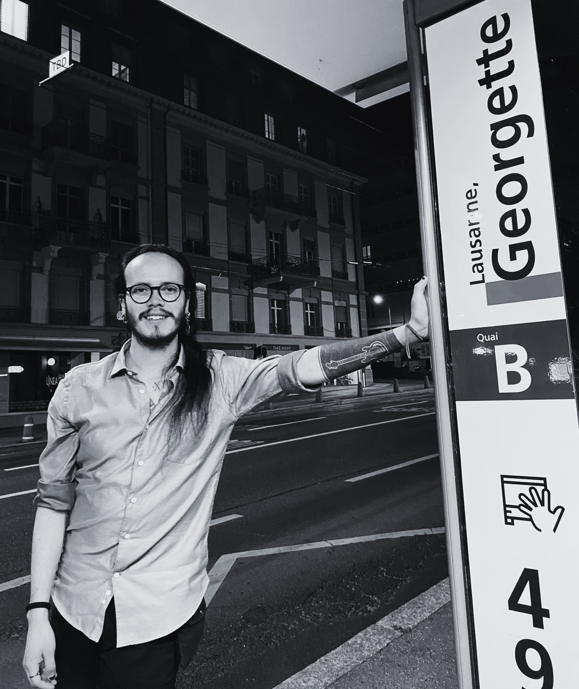

BIO
Jorge Care (1996) is a composer, digital artist, and improviser whose work bridges experimental electronic sound, instrumental performance, and the creation of light-driven concert environments. His practice is rooted in the interaction between musical gesture, real-time electronics, and spatial design, crafting immersive experiences where sound and light form a unified expressive language.
He holds a Bachelor of Arts in Music (Composition) and a Master of Arts in Music Composition and Theory, major in Computer Music and Live Electronics, both from the Haute école de musique de Genève, where he studied with Michael Jarrell, Luis Naón, Gilbert Nouno, and Katharina Rosenberger. He has also taken part in masterclasses with Georges Aperghis, Rebecca Saunders, Stefano Gervasoni, Clara Iannotta, and José Miguel Fernández.
His work has been presented at Festival Archipel, Fête de la Musique Genève, and Festival KorSonoR. He has held artistic residencies in Switzerland and Finland, and contributed to two electroacoustic albums produced in Switzerland. At the end of his studies at HEM, he was awarded the Prix Contrechamps, which includes a commission for the ensemble's 2026–2027 concert season.
He is currently developing Séismes, a performance piece for vocal duo, electronics, lights, and video. He is also an active member of the saxophone-and-electronics duo Des Visages, alongside César Vidal.

Photo / Julie Brice